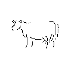
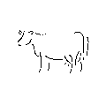
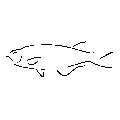
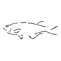

Feed Formulation Software for Balanced, Least-Cost Rations
MIXIT helps you create nutritionally balanced diets for livestock, poultry, fish, and pets—
using your ingredients and your nutrient targets. Our software applies linear programming to
calculate rations that meet your requirements at the lowest possible cost.
Built for Nutritionists, Trusted Worldwide
Whether you're formulating rations on a farm, in a feed mill, or as a consultant, MIXIT gives
you the control and precision you need—without the complexity of enterprise systems. Thousands
of professionals in over 100 countries rely on MIXIT to deliver fast, accurate results.
The Original Feed Formulation Pioneer
Since 1979, MIXIT has been helping animal nutrition professionals balance diets efficiently—
long before anyone else brought feed formulation to personal computers. Today, we offer both
desktop and cloud-based solutions to meet your workflow and budget, including a one-time-purchase
option with no subscription.

 

 
